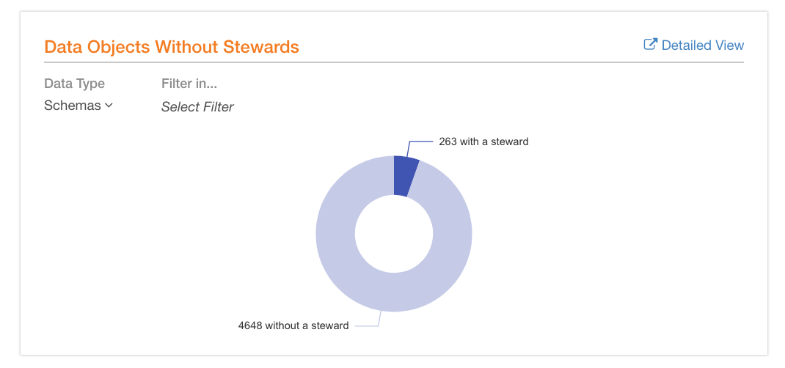
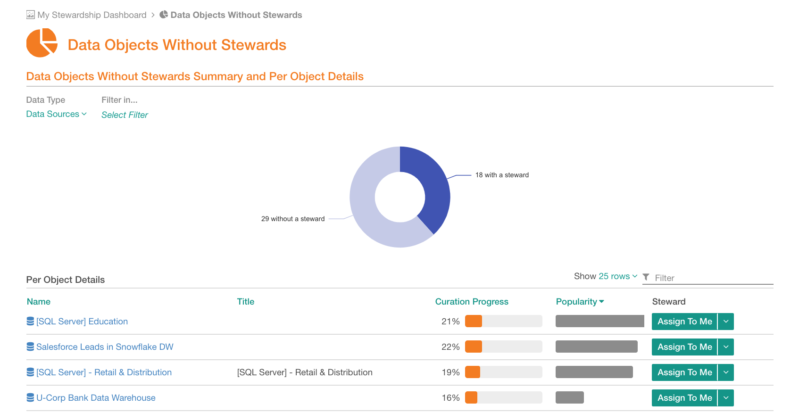
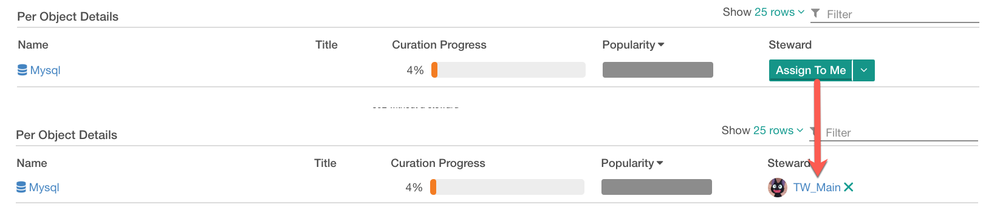
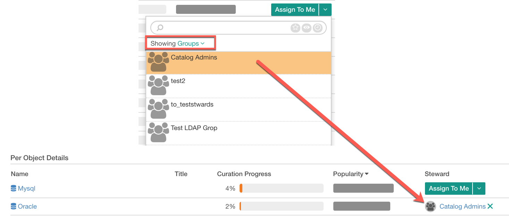

Data Objects Without Stewards¶
Alation Cloud Service Applies to Alation Cloud Service instances of Alation
Customer Managed Applies to customer-managed instances of Alation
Available from release V R3 (5.6.x)
The Data Objects Without Stewards report is intended to help catalog curators to determine which data objects in their catalog still do not have a Steward. It provides a quick way to assign one.
My Stewardship Dashboard shows a summary chart of the Data Objects Without Stewards report.
The full report can be accessed:
from the Curate menu using the Data Objects Without Stewards link.
from My Stewardship Dashboard, clicking the Detailed View link on the upper right of the report.
Summary Chart on My Stewardship Dashboard¶
It is a donut chart summary of data objects with and without a steward that provides an insight into how many of the data objects still require a curator to lead the catalog enrichment effort.
The summary chart can be filtered by data type or by a specific data object using the natural language filter.
Data Type List filter with such options as Data Sources, Schemas, Tables, and Columns. Use this filter to narrow the report down to one type of catalog objects.
Filter in Quick filter that allows searching for and filtering for a specific object. You can search among Data Sources, Schemas, and Tables cataloged in your Alation instance.
Both the filters work in the same way as on the Curation Progress report.
Full Data Objects Without Stewards Report¶
This page displays a more detailed view that includes both the donut chart summary and the Per Object Details. The Per Object Details view lists the specific objects which do not have a Steward. By default, it displays 25 rows per page and is sorted by Popularity in descending order.
The resulting table can be sorted by Name, Title, Curation Progress or Popularity by clicking on the corresponding column name:
Name Name of the object.
Title When available, the title assigned by Alation Lexicon and confirmed by a user.
Curation Progress Curation progress value for each object, See Understanding the Curation Progress Value.
Popularity Popularity of the object. By default, the table is sorted by popularity in descending order.
Steward This column has a control that allows assigning a steward to the data object directly from the report.
Assigning a Steward¶
To assign yourself as a steward, click Assign To Me for an object. This action will add you as a steward to this object, and your username will be added to the Steward field on its catalog page.
You can also assign a different user or even a group as a steward. To assign someone other than yourself,
Find the desired object in Per Objects Details view and click the down arrow on the right of the Assign To Me button to open the quick search field.
Enter the name of the user or group and select them from the resulting list.
Alternatively, you can select User or Group from the Showing list then scroll through the names and select the desired user or group.
After the user or group is selected, the Steward column will change from a button to the name of the selected user or group.
To remove or change the assignment, use the X icon next to the name.
